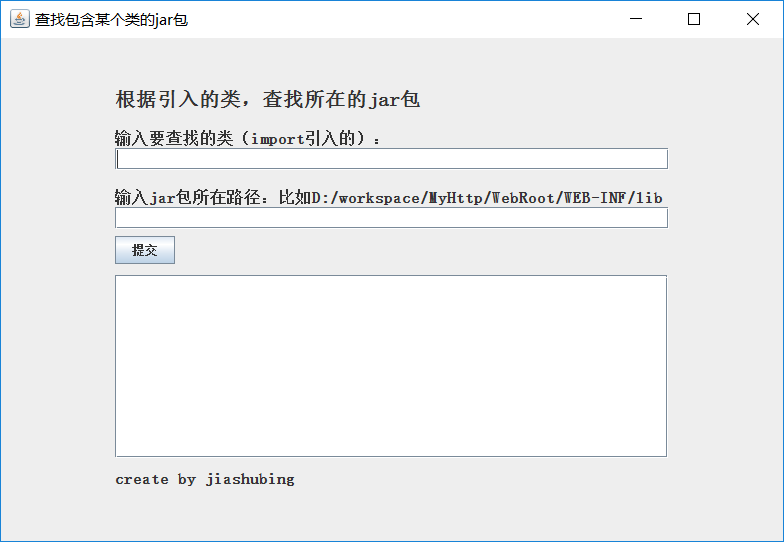
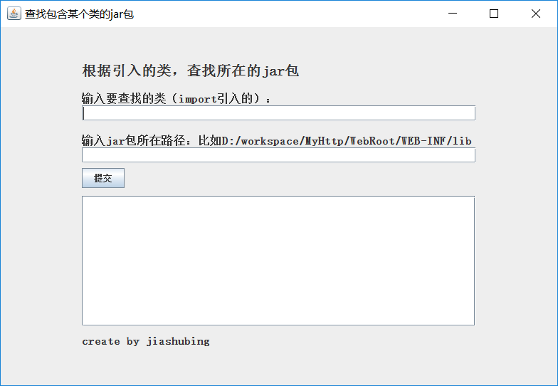

学习程序
-
查找Jar包小工具
在本地的项目中，有时想根据引入的类，查找所在的jar包。这个时候如果每个jar包都去找，那明显不是程序员的风格。于是我就写了一个小工具，运行后效果如下图，可以很方便得根据类名查找。

使用方法：在安装了jre环境的电脑中，进入控制台，然后输入命令：java -jar findjar.jar
资源下载：http://pan.baidu.com/s/1kVt5sj1 密码：367d
在本地的项目中，有时想根据引入的类，查找所在的jar包。这个时候如果每个jar包都去找，那明显不是程序员的风格。于是我就写了一个小工具，运行后效果如下图，可以很方便得根据类名查找。

使用方法：在安装了jre环境的电脑中，进入控制台，然后输入命令：java -jar findjar.jar
资源下载：http://pan.baidu.com/s/1kVt5sj1 密码：367d